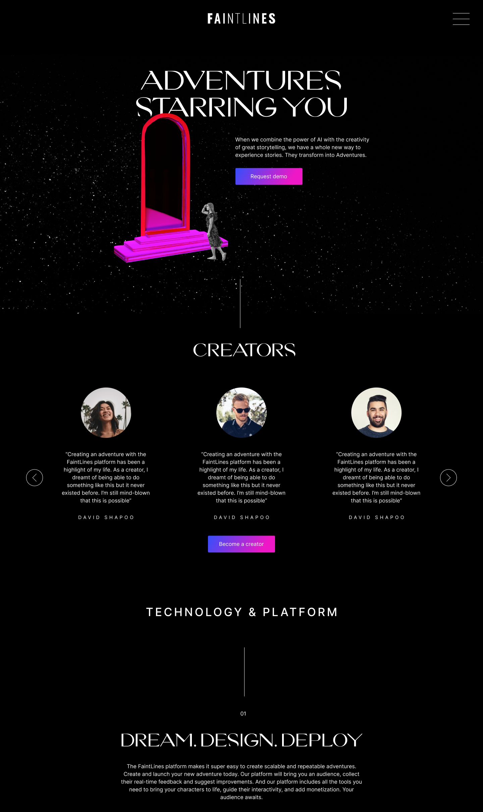
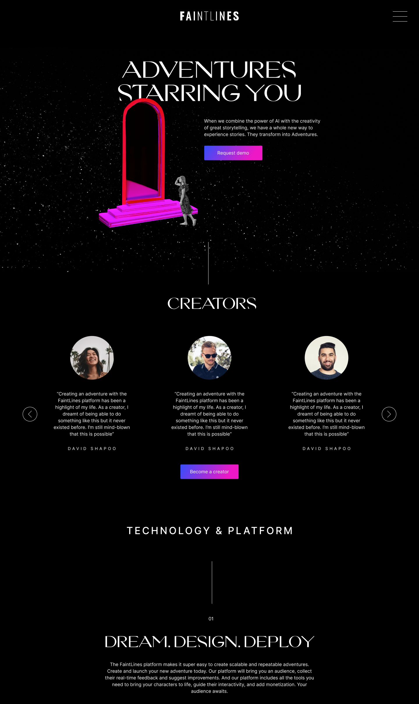
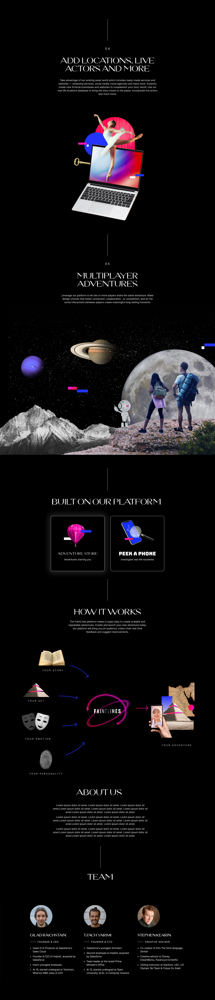
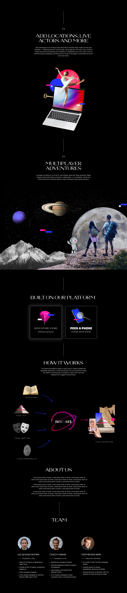

Faintlines create a platform that enable storytellers to easily create
immersive adventures. They provide players the opportunity to experience
adventures they wouldn't be able to experience otherwise.
Client | Faintlines
Art Direction | Studio Under
Brand
lead designer | Anastasia Vlasenko


 

 
